Daftar Isi
- 1Masuk ke aplikasi · login, Beranda, menu
- 2Absen Masuk (Clock In) · shift, pilih toko, selfie
- 3Di luar area toko · popup dan keterangan
- 4Absen Pulang (Clock Out)
- 5Riwayat absensi · kalender
- 6Izin & Cuti
- 7Pinjaman & Kasbon
- 8Perjalanan Dinas
- 9Lembur
- 10Slip Gaji
- 11Kalau ada masalah · tanya jawab, kontak HR
Cara membaca panduan ini
- HP dengan kamera, GPS (lokasi), dan internet.
- Email dan kata sandi akun dari HR.
- Browser Chrome (Android) atau Safari (iPhone).
Masuk ke aplikasi
Masuk sekali, lalu semua menu karyawan ada di Area Karyawan.
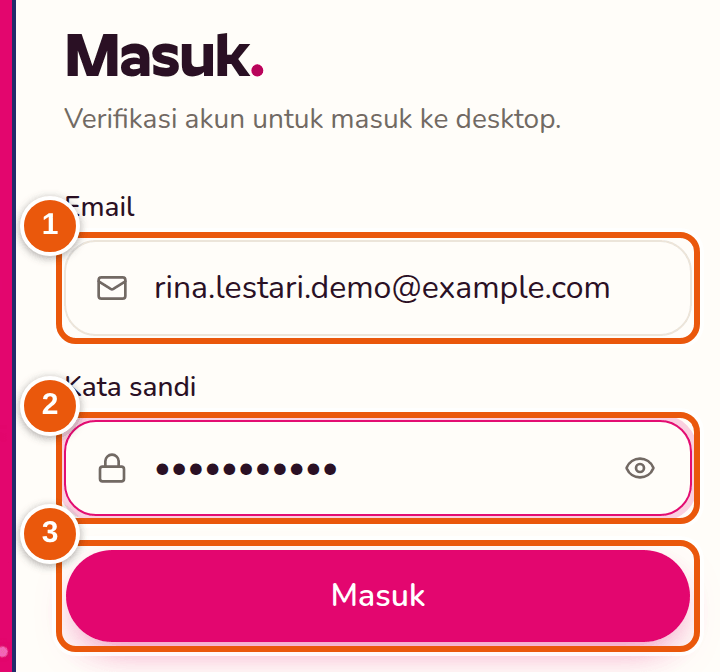
Masuk (login)
Buka alamat aplikasi Paddy dari HR di browser HP.
- Ketik email akun Anda.
- Ketik kata sandi. Ketuk ikon mata untuk melihat ketikan.
- Ketuk Masuk. Anda langsung dibawa ke Area Karyawan.
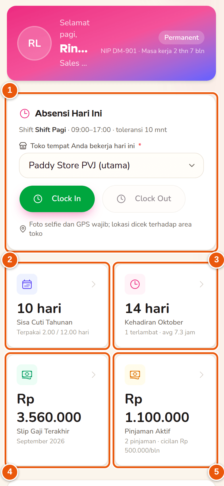
Beranda
Halaman pertama setelah masuk. Isinya ringkasan hari Anda.
- Absensi Hari Ini: shift, pilihan toko, tombol Clock In dan Clock Out. Lihat Bagian 2.
- Sisa Cuti Tahunan tahun ini.
- Kehadiran bulan ini dan jumlah terlambat.
- Slip Gaji Terakhir (gaji diterima).
- Pinjaman Aktif: sisa dan cicilan per bulan.
Ketuk kartu mana saja untuk membuka halaman lengkapnya. Di bawahnya ada Jadwal Minggu Ini dan Pengumuman.
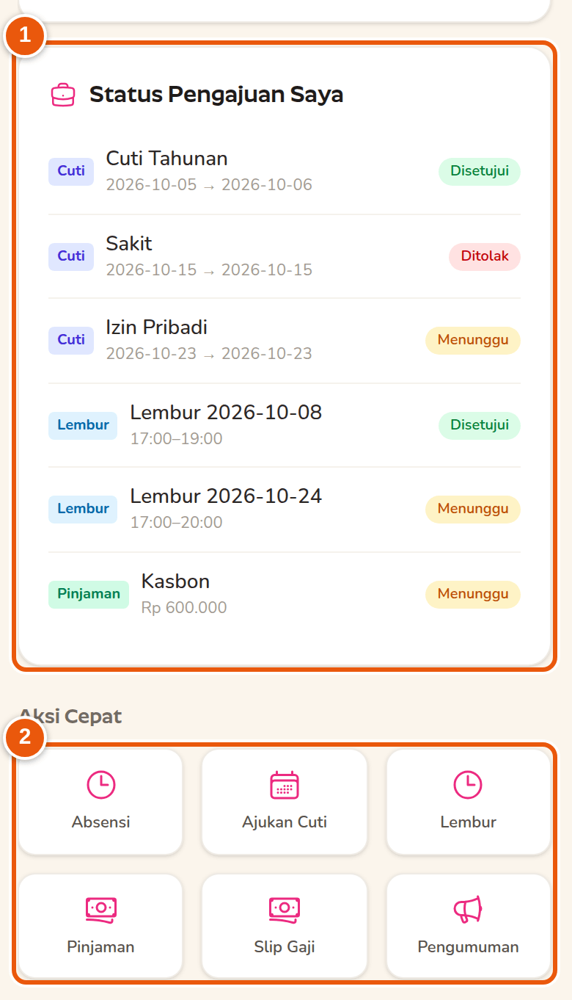
Status pengajuan dan Aksi Cepat
- Status Pengajuan Saya: cuti, lembur, dan pinjaman terbaru beserta statusnya.
- Aksi Cepat: tombol pintas ke Absensi, Ajukan Cuti, Lembur, Pinjaman, Slip Gaji, dan Pengumuman.
Arti warna status:
Menunggu belum diputus Disetujui diterima Ditolak tidak diterima
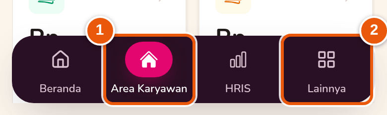
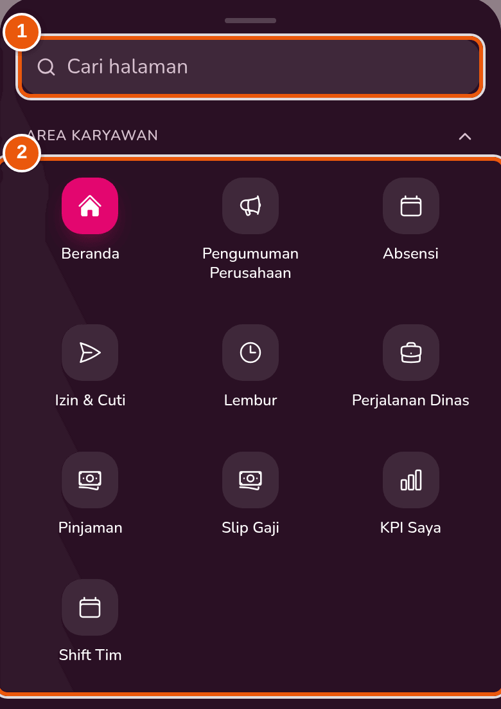
Pindah menu
Di bagian bawah layar ada bilah menu.
- Area Karyawan: kembali ke Beranda karyawan.
- Lainnya: membuka semua menu.
Di jendela Lainnya (gambar bawah):
- Kolom Cari halaman: ketik nama menu, mis. "dinas".
- Semua menu Area Karyawan. Perjalanan Dinas hanya ada di sini (tidak ada di Aksi Cepat).
Absen Masuk (Clock In)
Absen dengan foto selfie dan lokasi GPS. Bisa dari Beranda atau menu Absensi.
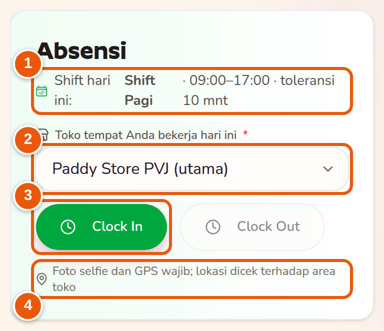
Buka halaman Absensi
- Shift hari ini: jam masuk, jam pulang, dan toleransi terlambat.
- Toko tempat Anda bekerja hari ini. Muncul bila Anda ditempatkan di lebih dari satu toko. Wajib dipilih.
- Ketuk Clock In.
- Foto selfie dan GPS wajib.
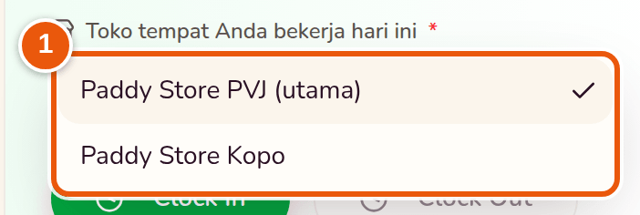
Pilih toko (bila ada pilihan)
- Ketuk kotak toko, lalu pilih toko tempat Anda benar-benar bekerja hari ini.
Tanda (utama) = toko penempatan utama Anda. Bila Anda hanya punya satu toko, nama toko langsung tampil dan tidak perlu dipilih.
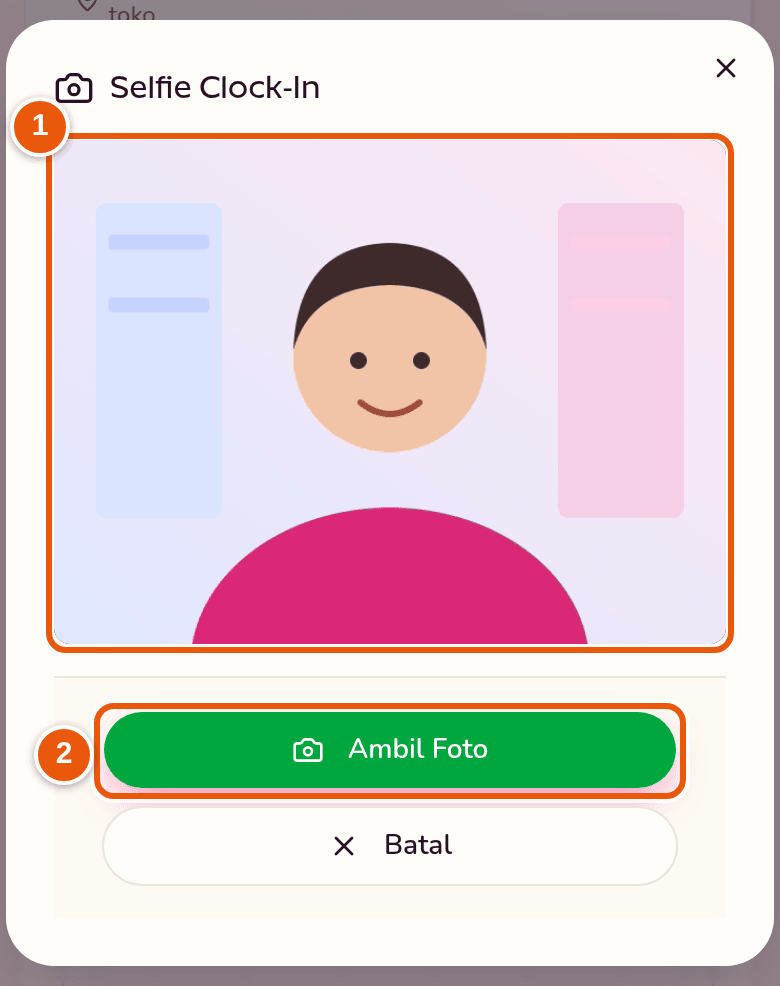
Ambil foto selfie
Bila HP bertanya, ketuk Izinkan untuk kamera.
- Arahkan wajah ke kamera. Pastikan wajah terlihat jelas.
- Ketuk Ambil Foto.
Ketuk Batal bila tidak jadi absen.
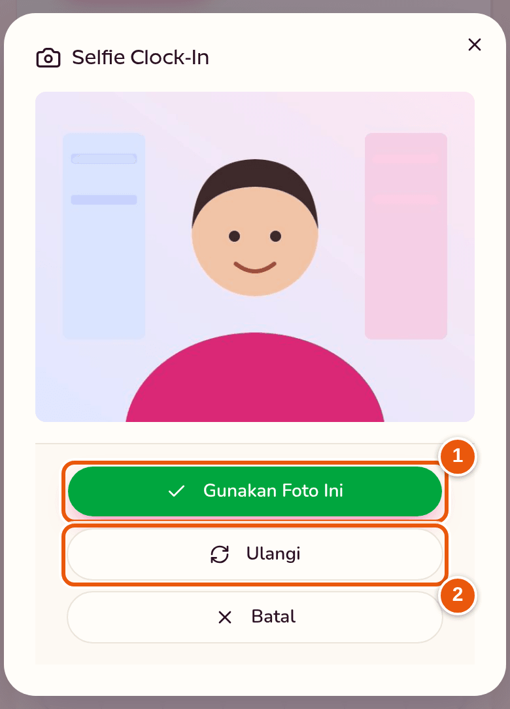
Kirim foto
- Ketuk Gunakan Foto Ini bila foto sudah jelas.
- Ketuk Ulangi untuk mengambil foto lagi.
Setelah itu aplikasi membaca lokasi GPS. Bila HP bertanya, ketuk Izinkan untuk lokasi.
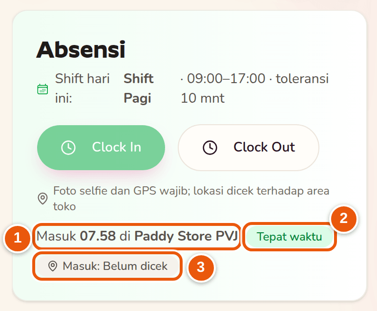
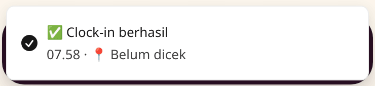
Absen masuk berhasil
Muncul pesan Clock-in berhasil (gambar bawah).
- Jam masuk dan nama toko.
- Tepat waktu atau Terlambat … mnt.
- Status lokasi absen (lihat tabel).
| Status lokasi | Artinya |
|---|---|
| Dalam area | Anda berada di dalam radius toko. |
| Di luar area | Anda di luar radius toko. Wajib isi keterangan. Lihat Bagian 3. |
| Belum dicek | Lokasi tidak dinilai: lokasi toko belum diisi HR, atau GPS HP tidak terbaca. Absen tetap sah. |
| Perjalanan Dinas | Anda sedang dinas yang sudah disetujui. Lokasi tidak dicek. Lihat Bagian 8. |
Di luar area toko
Bila lokasi toko sudah diisi HR dan Anda absen jauh dari toko, muncul popup ini.
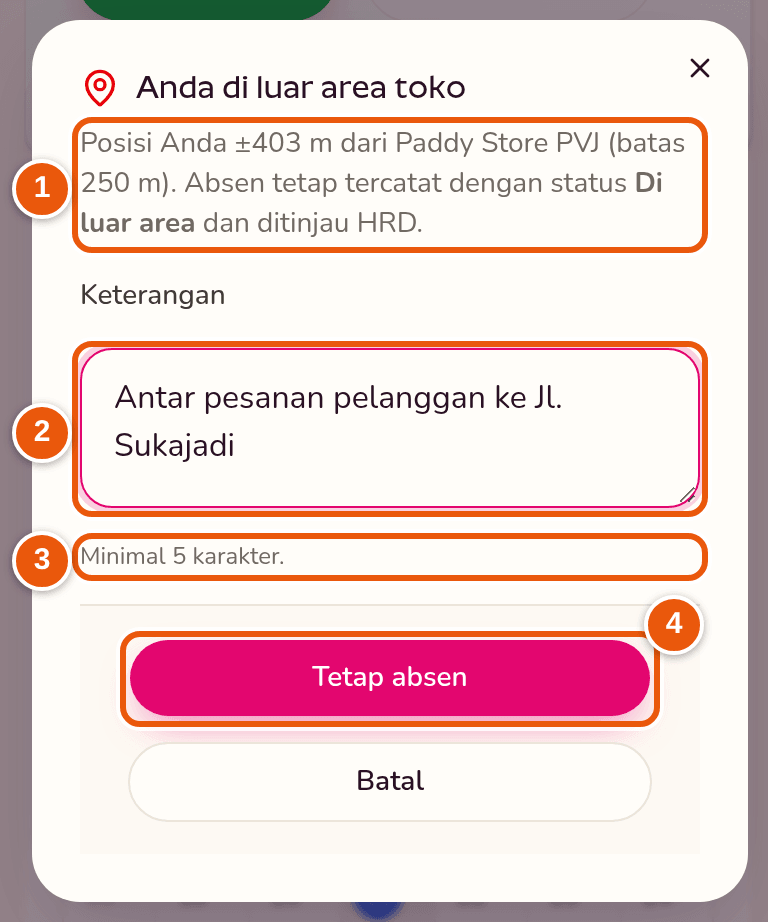
Popup "Anda di luar area toko"
- Jarak Anda dari toko dan batas radius toko. Contoh: ±403 m dari toko, batas 250 m.
- Tulis keterangan kenapa Anda di luar toko. Contoh: antar pesanan pelanggan, ambil stok di gudang.
- Keterangan minimal 5 karakter.
- Ketuk Tetap absen.
Ketuk Batal bila Anda ternyata salah tempat. Absen belum tercatat; dekati toko lalu absen lagi.
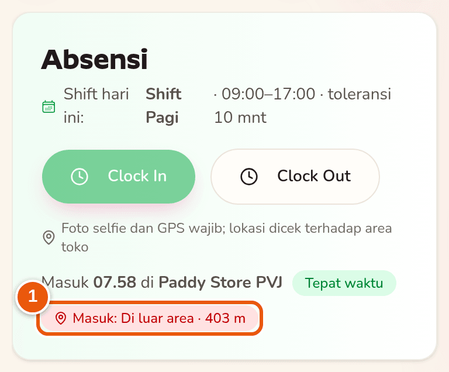
Hasilnya
- Absen tetap tercatat dengan status Di luar area · jarak.
HR akan meninjau keterangan Anda. Tulis keterangan yang jujur dan jelas.
Hal yang sama berlaku saat Absen Pulang.
- Absen saat sudah di dalam toko.
- Nyalakan GPS / lokasi akurat di HP.
- Tugas di luar toko seharian? Ajukan Perjalanan Dinas dulu (Bagian 8).
Absen Pulang (Clock Out)
Lakukan setiap selesai kerja. Caranya sama dengan absen masuk.
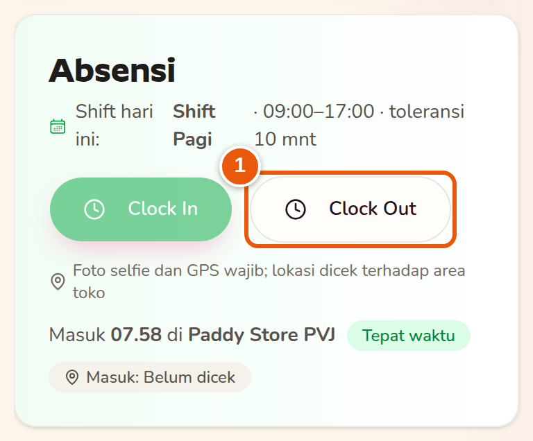
Langkah
- Ketuk Clock Out (aktif setelah Anda absen masuk).
Lalu ambil selfie, ketuk Gunakan Foto Ini, dan izinkan lokasi. Sama seperti Bagian 2.
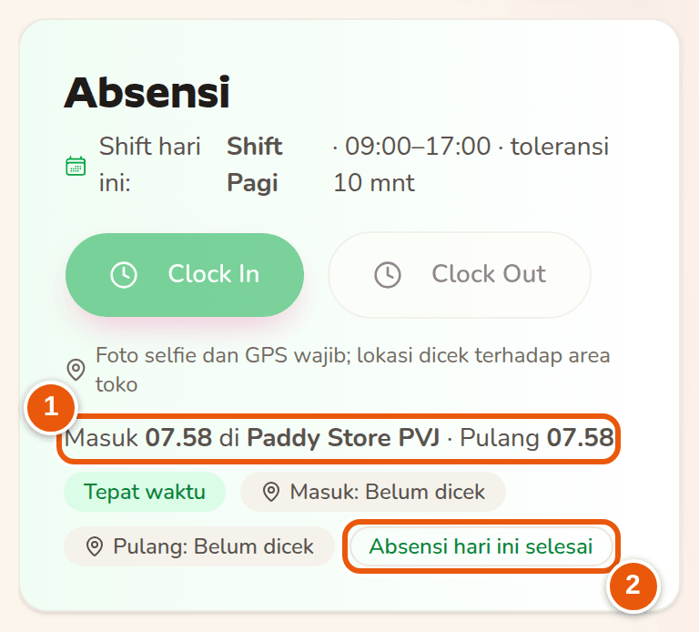
Selesai
- Jam masuk dan jam pulang tercatat.
- Muncul tanda Absensi hari ini selesai.
Status lokasi pulang tampil sebagai Pulang: ….
- Lembur hanya dihitung bila Anda absen pulang. Lembur dibayar sesuai jam yang benar-benar terjadi.
- Lupa absen pulang? Segera hubungi atasan atau HR. Absen tidak bisa diubah sendiri.
Riwayat absensi
Kalender absensi ada di bawah halaman Absensi.
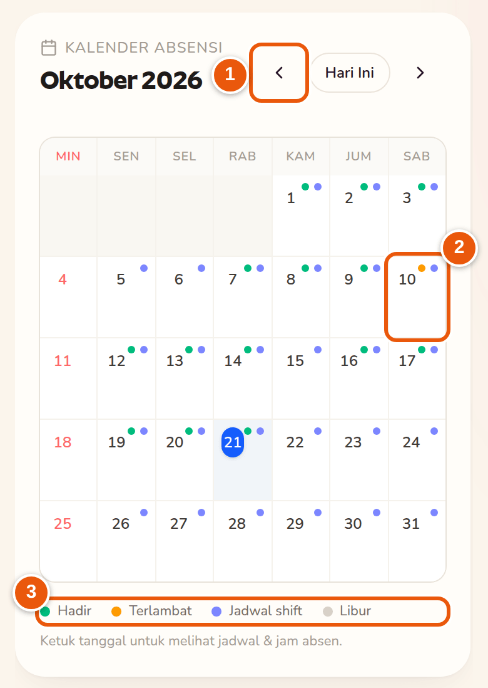
Kalender absensi
- Ganti bulan dengan tombol panah. Hari Ini kembali ke bulan berjalan.
- Ketuk tanggal untuk melihat rinciannya.
- Arti titik warna.
Titik hijau = hadir, oranye = terlambat, ungu = ada jadwal shift, abu-abu = libur. Tanggal hari ini berwarna biru.
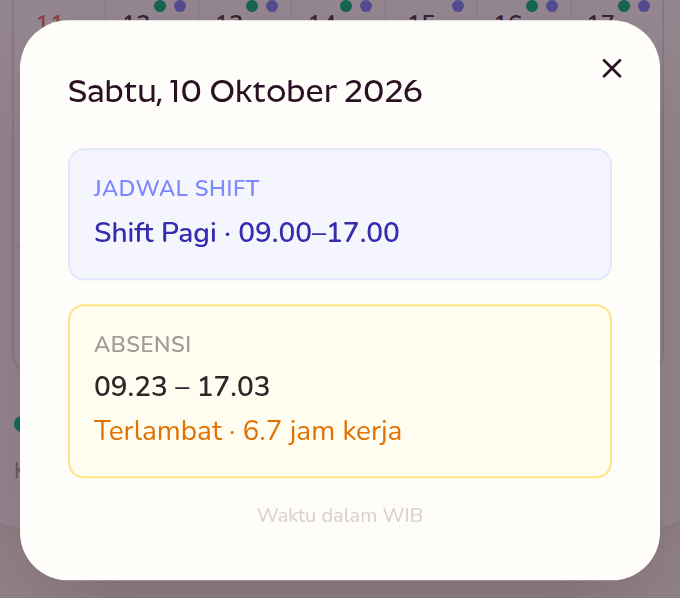
Rincian satu hari
Berisi jadwal shift hari itu, jam masuk – jam pulang, terlambat atau tidak, dan jumlah jam kerja.
Semua jam memakai WIB.
Izin & Cuti
Ajukan izin atau cuti dari HP, lalu pantau statusnya.
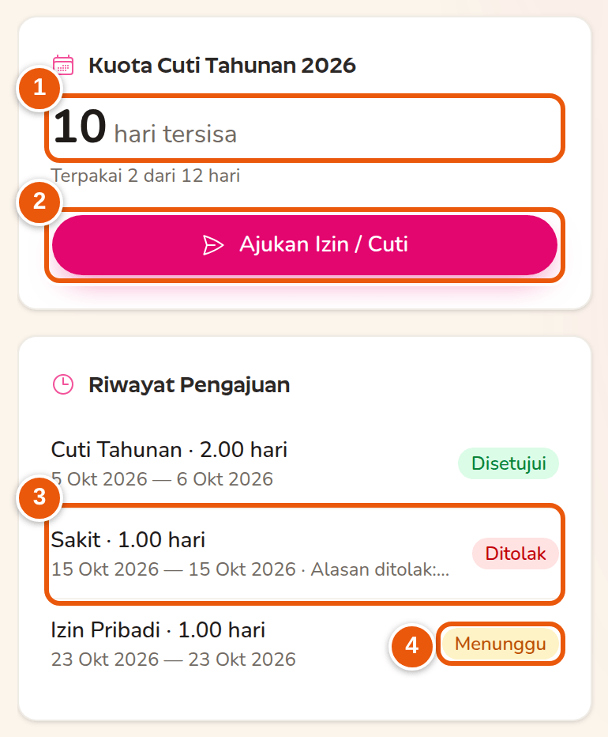
Halaman Izin & Cuti
Buka lewat Aksi Cepat Ajukan Cuti atau menu Izin & Cuti.
- Sisa cuti tahunan tahun ini.
- Ketuk Ajukan Izin / Cuti.
- Status tiap pengajuan.
- Bila Ditolak, alasannya tertulis setelah Alasan ditolak:.
Alasan panjang bisa terpotong di layar HP. Putar HP mendatar, atau tanya atasan / HR.
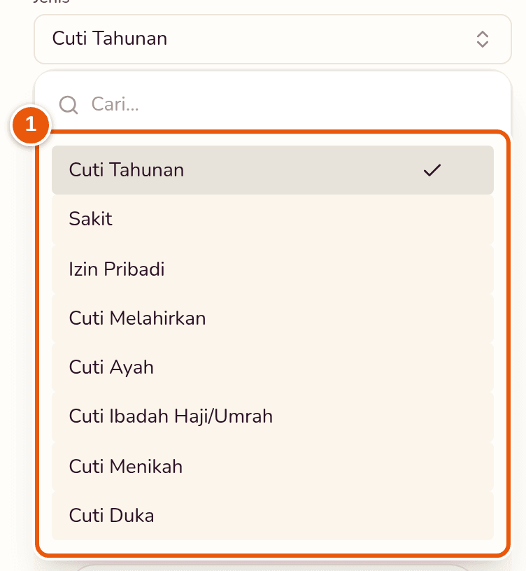
Pilih jenis
- Ketuk kotak Jenis, lalu pilih jenis izin/cuti.
| Jenis | Catatan |
|---|---|
| Cuti Tahunan | Memotong jatah cuti tahunan (12 hari/tahun; karyawan baru dihitung sisa bulan). |
| Sakit | Sebaiknya lampirkan foto surat dokter. |
| Izin Pribadi | Maks. 3×/bulan, per satu hari. Memotong 1 hari THP per hari izin. Karyawan magang tidak dipotong. |
| Izin Leader | Khusus jabatan Supervisor ke atas. Maks. 1×/bulan, per satu hari. Tidak memotong gaji. |
| Cuti Melahirkan | |
| Cuti Ayah | |
| Cuti Ibadah Haji/Umrah | |
| Cuti Menikah | |
| Cuti Duka |
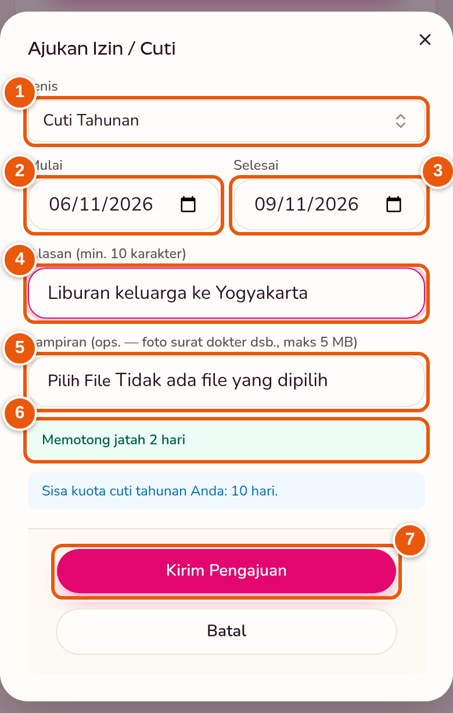
Isi form
- Jenis izin/cuti.
- Tanggal Mulai.
- Tanggal Selesai.
- Alasan, minimal 10 karakter.
- Lampiran (boleh kosong): foto surat dokter dsb., maks. 5 MB.
- Memotong jatah … hari: perkiraan jatah yang terpakai.
- Ketuk Kirim Pengajuan.
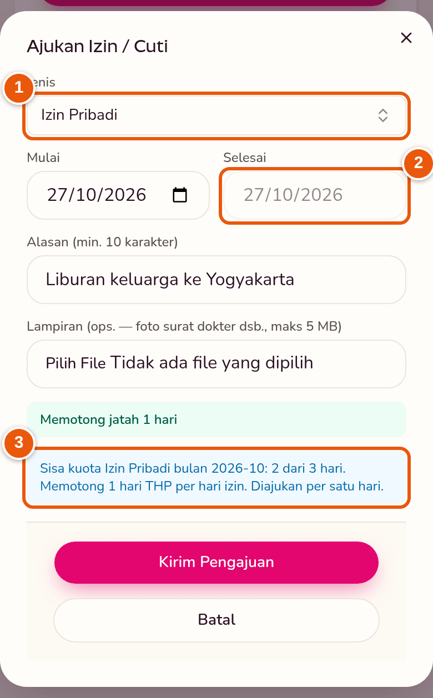
Izin Pribadi
- Pilih Izin Pribadi.
- Tanggal Selesai otomatis sama dengan tanggal mulai (izin per satu hari).
- Sisa kuota bulan itu dan efeknya ke gaji.
Perlu 2 hari? Ajukan dua kali, satu per hari. Bila kuota habis, sistem menolak pengajuan.
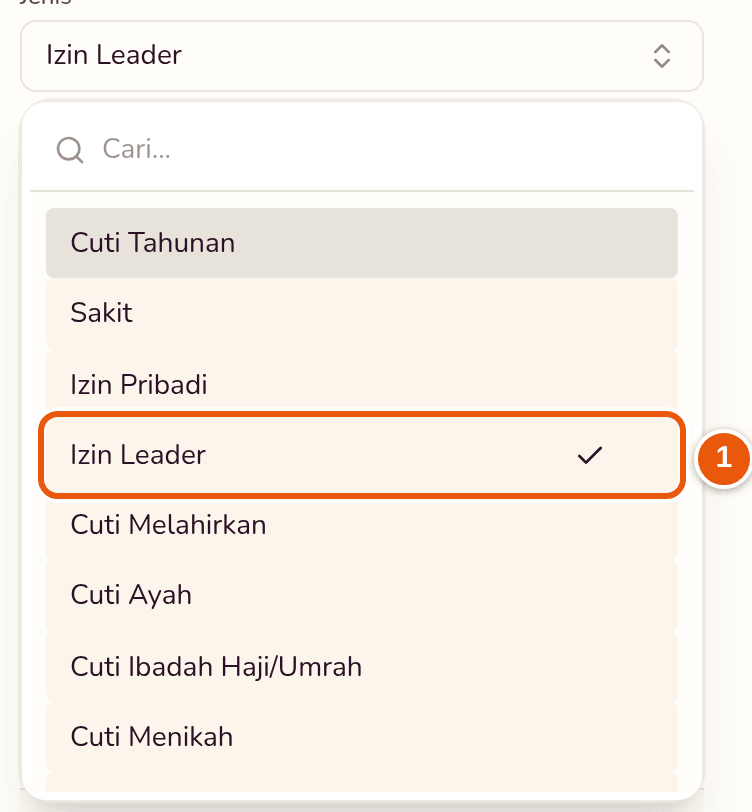
Izin Leader (Supervisor ke atas)
- Izin Leader hanya muncul di daftar bila jabatan Anda Supervisor ke atas.
Kuota 1 hari per bulan, per satu hari, tidak memotong gaji. Gambar ini dari akun atasan contoh (Andi, Store Manager).
Status pengajuan
| Status | Artinya |
|---|---|
| Menunggu | Belum diputus atasan langsung / HR. |
| Disetujui | Izin/cuti diterima. |
| Ditolak | Tidak diterima. Baca alasannya. Boleh ajukan ulang dengan perbaikan. |
| Dibatalkan | Pengajuan dibatalkan. Minta HR bila perlu membatalkan cuti yang sudah disetujui. |
Pinjaman & Kasbon
Ajukan kasbon (potong gaji 1–2 bulan) atau pinjaman, lalu pantau cicilannya.
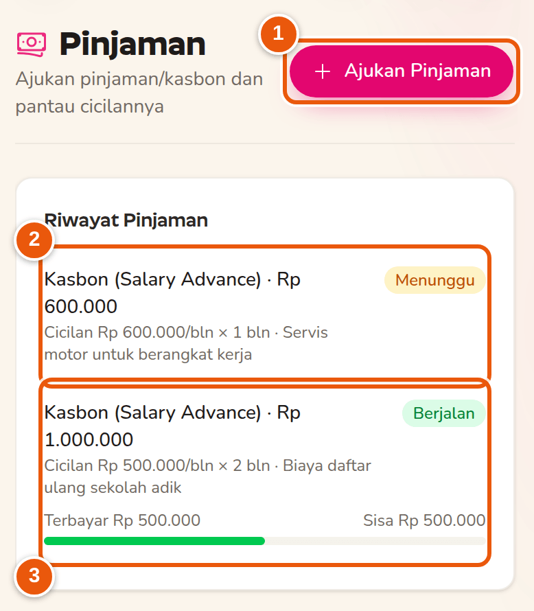
Halaman Pinjaman
- Ketuk Ajukan Pinjaman.
- Pengajuan yang masih Menunggu.
- Kasbon Berjalan: sudah dibayar, sisa, dan garis kemajuan cicilan.
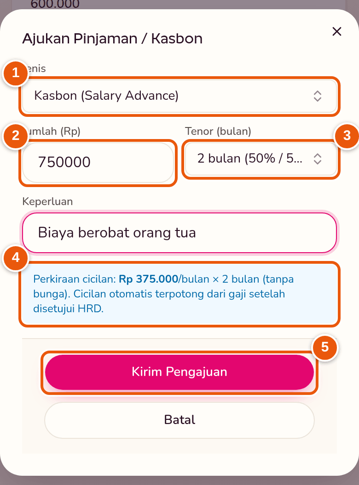
Isi form
- Jenis: Kasbon (Salary Advance) atau Pinjaman.
- Jumlah dalam rupiah, tanpa titik.
- Tenor: kasbon 1 bulan, atau 2 bulan (50% / 50%).
- Perkiraan cicilan per bulan, tanpa bunga.
- Ketuk Kirim Pengajuan.
Isi juga Keperluan. Cicilan otomatis dipotong dari gaji setelah disetujui.
| Aturan kasbon | |
|---|---|
| Jumlah maksimal | 50% THP (gaji pokok + tunjangan transport, makan, dan jabatan). |
| Tenor | 1 bulan, atau 2 bulan (dipotong 50% / 50%). |
| Tidak bisa mengajukan | Karyawan berstatus Probation, Freelance, atau Magang. |
| Pinjaman aktif | Jumlah pinjaman aktif per orang dibatasi aturan HR. |
Untuk Pinjaman (bukan kasbon), cicilan per bulan dibatasi persentase gaji pokok sesuai aturan HR. Bila melewati batas, sistem menampilkan pesan dan pengajuan tidak terkirim.
Alur status kasbon
- Menunggu: menunggu persetujuan atasan level Manager ke atas di jalur atasan Anda. Bila tidak ada, langsung ke HR.
- Disetujui Manager: tinggal persetujuan HR.
- Berjalan: disetujui HR; cicilan dipotong dari gaji.
- Lunas: cicilan selesai. Ditolak bisa terjadi di tahap mana pun; alasannya tampil di bawah pengajuan.
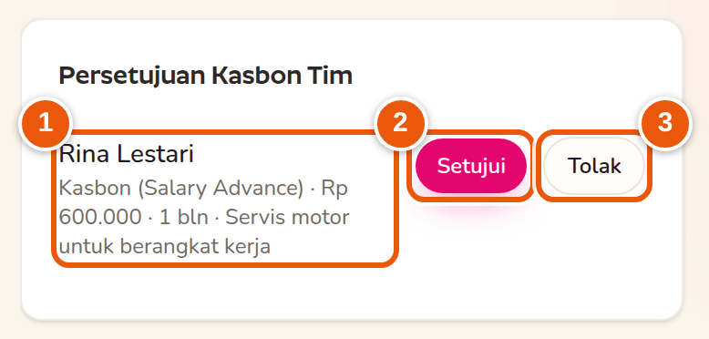
Untuk atasan: Persetujuan Kasbon Tim
Atasan level Manager ke atas melihat kotak ini di halaman Pinjaman. Gambar dari akun contoh Andi (Store Manager).
- Nama karyawan, jumlah, tenor, dan keperluan.
- Setujui: diteruskan ke HR.
- Tolak: kasbon tidak diproses.
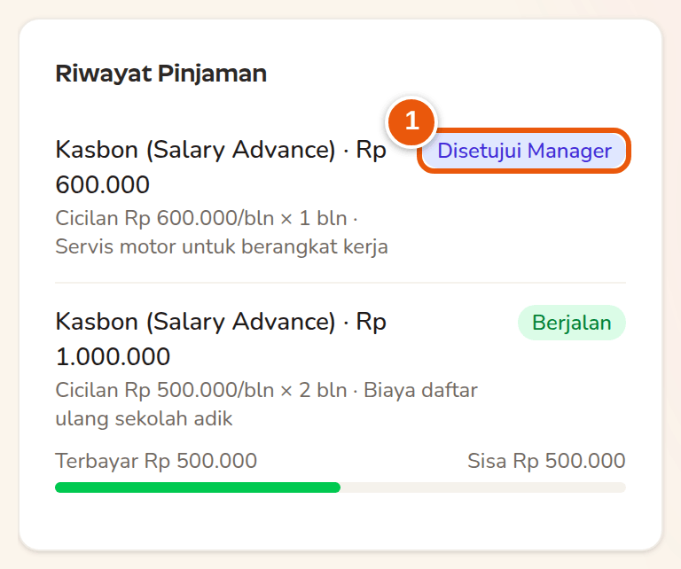
Yang dilihat karyawan
- Setelah atasan menyetujui, status berubah menjadi Disetujui Manager. Tunggu persetujuan HR.
Perjalanan Dinas
Untuk tugas di luar toko. Selama dinas disetujui, absen tidak dicek radius toko.
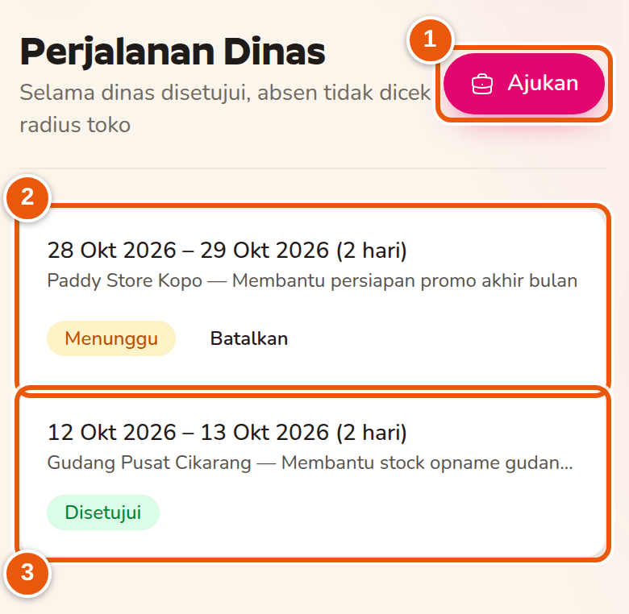
Halaman Perjalanan Dinas
Buka lewat Lainnya → Perjalanan Dinas.
- Ketuk Ajukan.
- Pengajuan Menunggu. Ketuk Batalkan bila tidak jadi.
- Dinas Disetujui.
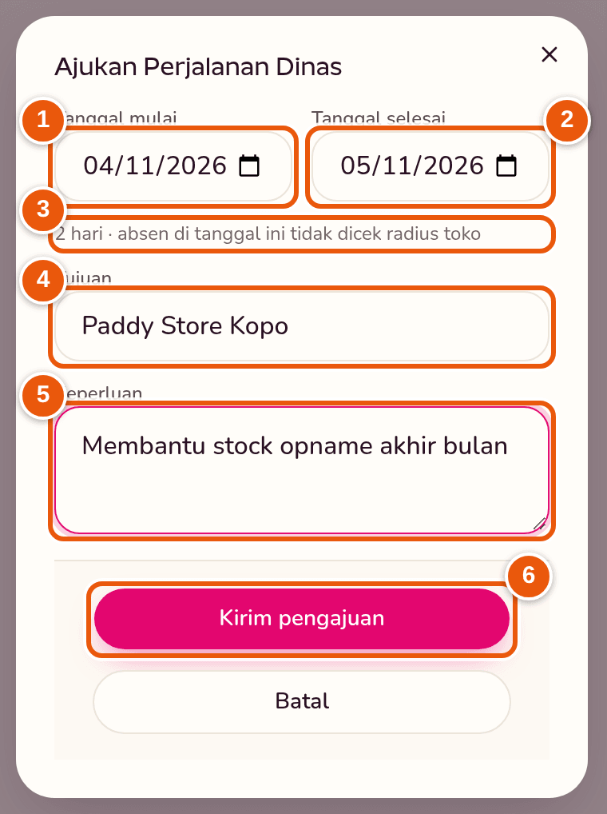
Isi form
- Tanggal mulai (paling cepat hari ini).
- Tanggal selesai. Maksimal 31 hari per pengajuan.
- Jumlah hari dinas.
- Tujuan, minimal 3 karakter.
- Keperluan, minimal 5 karakter.
- Ketuk Kirim pengajuan.
Ajukan sebelum berangkat, supaya disetujui sebelum Anda absen di lokasi dinas.
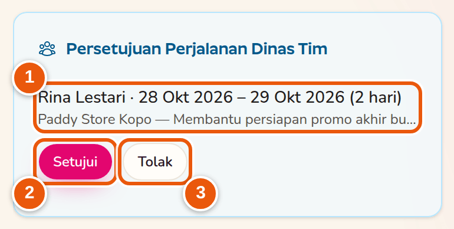
Untuk atasan langsung
Atasan langsung melihat kotak Persetujuan Perjalanan Dinas Tim di halaman yang sama.
- Nama, tanggal, tujuan, dan keperluan.
- Setujui.
- Tolak: wajib menulis alasan.
Lembur
Ajukan lembur, atau konfirmasi penugasan lembur dari perusahaan.
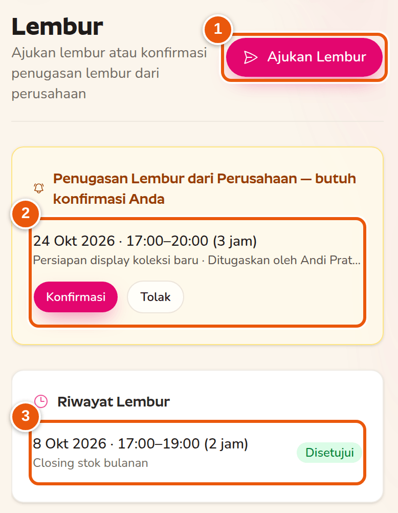
Halaman Lembur
- Ketuk Ajukan Lembur.
- Penugasan dari perusahaan: ketuk Konfirmasi bila bersedia, atau Tolak dengan alasan.
- Riwayat Lembur dan statusnya.
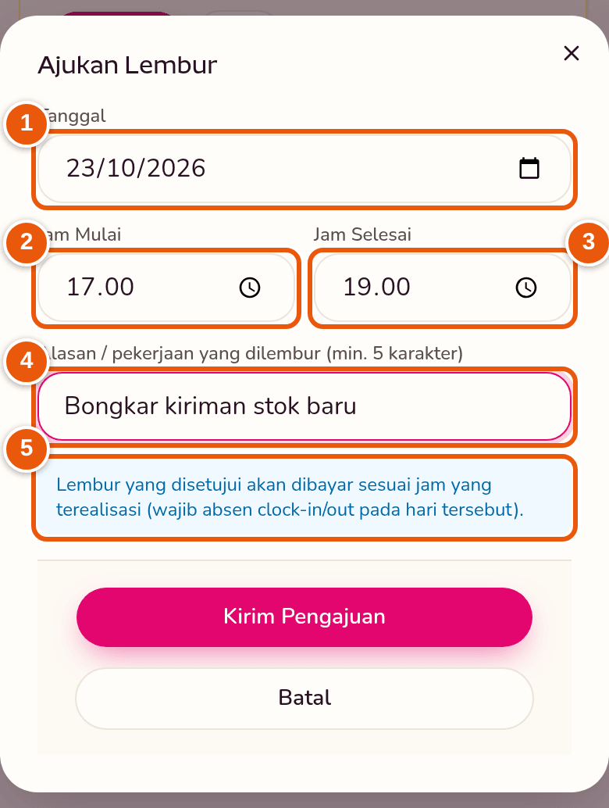
Isi form
- Tanggal lembur.
- Jam mulai.
- Jam selesai. Lembur 1 sampai 12 jam.
- Alasan / pekerjaan, minimal 5 karakter.
- Lembur dibayar sesuai jam yang terjadi. Wajib absen masuk dan pulang hari itu.
Lalu ketuk Kirim Pengajuan. Pengajuan diputus atasan langsung atau HR. Yang masih Menunggu bisa Anda batalkan.
Slip Gaji
Slip muncul setelah gaji periode itu dibayarkan.
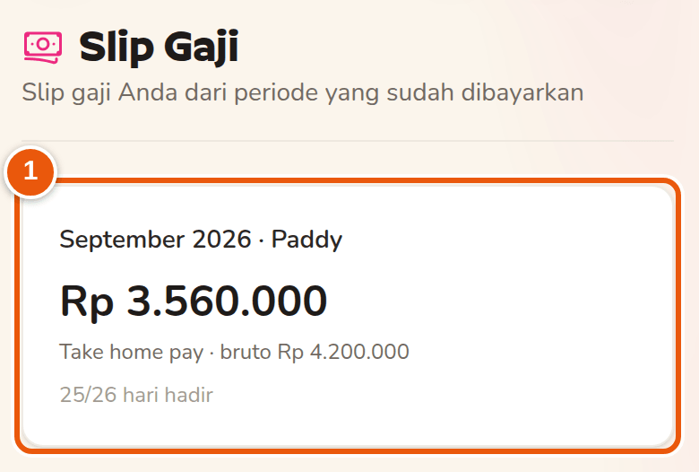
Lihat slip
Buka Aksi Cepat Slip Gaji.
- Ketuk kartu bulan yang ingin dilihat. Angka besar = gaji diterima (take home pay).
Belum ada slip? Artinya gaji periode itu belum dibayarkan.
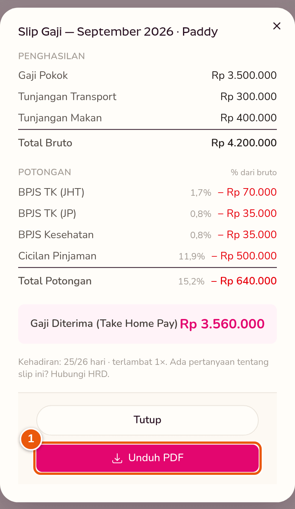
Rincian slip
Berisi penghasilan, potongan (BPJS, cicilan pinjaman, dll.), gaji diterima, dan kehadiran.
- Ketuk Unduh PDF untuk menyimpan slip.
Kalau ada masalah
Tanya jawab singkat. Belum terjawab? Hubungi HR.
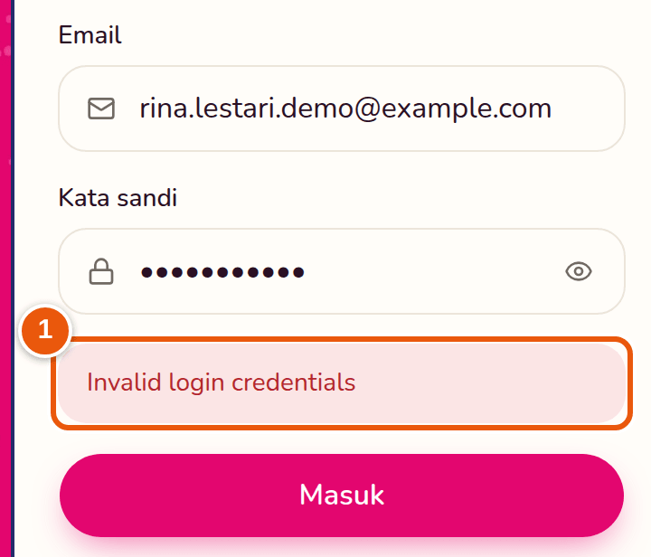
Tidak bisa masuk
- Pesan Invalid login credentials = email atau kata sandi salah.
Periksa huruf besar/kecil dan spasi. Ketuk ikon mata untuk melihat kata sandi.
Muncul Terlalu banyak percobaan masuk? Tunggu beberapa menit, lalu coba lagi.
Lupa kata sandi? Minta HR mengatur ulang.
- Kamera tidak muncul saat absen.
- Izinkan kamera untuk browser di pengaturan HP, lalu muat ulang halaman. Tutup aplikasi lain yang memakai kamera.
- Status lokasi selalu "Belum dicek".
- Normal selama lokasi toko belum diisi HR. Tetap nyalakan GPS dan izinkan lokasi.
- Muncul popup "di luar area", padahal saya di toko.
- GPS kurang akurat. Keluar ke dekat pintu/jendela, tunggu sebentar, lalu ulangi. Bila tetap muncul, isi keterangan yang jujur dan beri tahu atasan.
- Tombol Clock In tidak bisa ditekan.
- Pilih toko dulu (bila ada pilihan toko). Bila sudah absen masuk hari ini, tombol memang mati.
- Lupa absen masuk atau pulang.
- Laporkan ke atasan atau HR hari itu juga. Perbaikan absen dilakukan HR.
- Izin Leader tidak ada di daftar.
- Izin Leader khusus jabatan Supervisor ke atas. Bila jabatan Anda sudah sesuai, minta HR memeriksa data jabatan.
- Pengajuan ditolak sistem dengan pesan merah.
- Baca pesannya. Contoh: kuota habis, tanggal bertabrakan dengan pengajuan lain, atau kasbon melebihi 50% THP.
- Data saya (nama, jabatan, toko) salah.
- Hubungi HR. Data karyawan hanya bisa diubah HR.